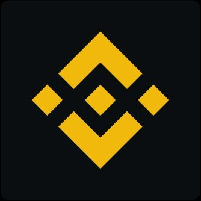
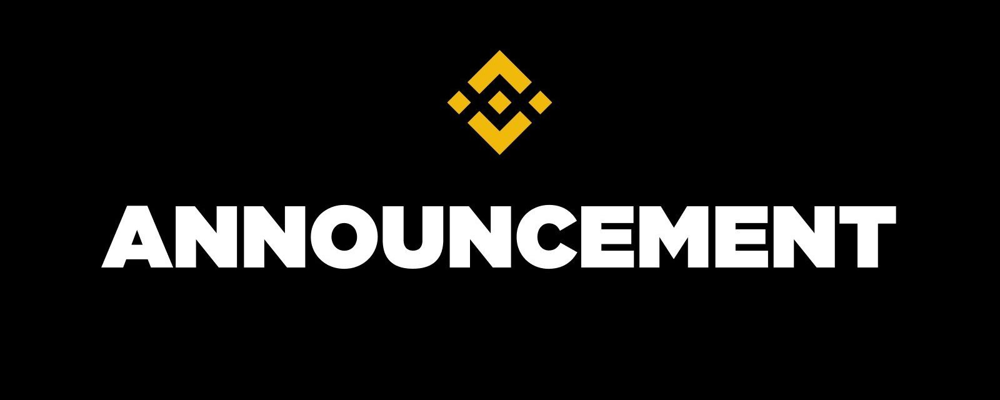

Binance
@binance

Security Incident | Update #3:
90% of Stolen Assets Replenished
; Proof of Reserves Snapshot Provided
Fellow Binancians, Our last update explained that Binance had set aside more than $6.34B in company funds to cover hacked losses...
2:30 PM UTC · Oct 31, 2026